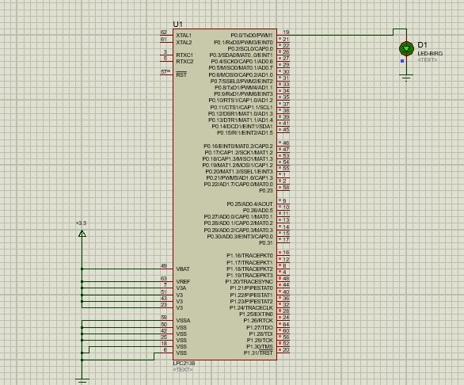

This experiment demonstrates the interfacing of a LED module with the LPC2148 microcontroller.
Objectives
To learn how to connect and configure an LED with the LPC2148 microcontroller.
To explore the basics of GPIO pin configuration for communication with peripherals.
Theory
1. Introduction: The experiment focuses on using General-Purpose Input/Output (GPIO) pins of a microcontroller to control an LED. GPIO pins are versatile and can be programmed to function either as input or output. In this experiment, the GPIO pin is configured as an output to control the LED state.
2. GPIO Overview: GPIO pins are digital pins on a microcontroller that can be controlled by software. They are used to interface with various external devices such as LEDs, switches, sensors, and more. Each GPIO pin can be independently configured as an input or output.
3. Microcontroller and LED Basics: An LED (Light Emitting Diode) is a semiconductor device that emits light when an electric current passes through it. A microcontroller is a compact integrated circuit designed to govern a specific operation in an embedded system. For this experiment, an LPC214x series microcontroller is used.
4. Working Principle: The microcontroller’s GPIO pin is programmed to output a digital signal (high or low) to control the LED. When the GPIO pin outputs a high signal (logic 1), the LED is turned off. When it outputs a low signal (logic 0), the LED is turned on.
5. Circuit Design: Microcontroller: LPC214x; LED: Connected to a GPIO pin (P0.0); Resistor: Used to limit the current through the LED and prevent damage to the microcontroller and LED.
6. Software Implementation: The microcontroller is programmed to toggle the LED state by switching the GPIO pin between high and low states. The software implementation typically involves the following steps:
Initialization: Configure the GPIO pin as an output pin.
LED Control: Use software to set the GPIO pin high or low, thereby controlling the LED state.
Simulation

Algorithm
The LED is connected to P0.0 using LED_PIN = 1 << 0.
A class LED is created to manage the LED state.
The constructor initializes P0.0 as an output pin and sets the LED off.
The on() method turns the LED on, off() turns it off, and toggle() switches between on & off.
The led.toggle() method is called repeatedly in the main loop to change the LED state.
A simple delay is added between each toggle to make the LED blink visibly.
Code for Simulation:
#include <lpc214x.h> // LED pin definition
#define LED_PIN (1 << 0) // P0.0
class LED { // Class to encapsulate LED functionality
public: // Constructor: Initialize GPIO pin for LED
LED() {
IODIR0 |= LED_PIN; // Set P0.0 as output
IOSET0 = LED_PIN; // Turn LED off initially
} // Function to turn the LED on
void on() {
IOCLR0 = LED_PIN; // Clear P0.0 (turn LED on)
}
// Function to turn the LED off
void off() {
IOSET0 = LED_PIN; // Set P0.0 (turn LED off)
} // Function to toggle the LED
void toggle() {
if (IOPIN0 & LED_PIN) {
on(); // If LED is off, turn it on
} else {
off(); // If LED is on, turn it off
}
}
};
int main() {
LED led; // Create an LED object
while (1) {
led.toggle(); // Toggle the LED state
for (volatile int i = 0; i < 1000000; i++); // Simple delay loop
}
}
Test your knowledge on LCD interfacing with LPC2148 by answering a few questions...
Quiz: ON/OFF Control of LED using GPIO Pins
1. Which GPIO pin is typically used to control an LED?
Pin A
Pin B
Pin C
Pin D
2. What is the purpose of a current-limiting resistor in an LED circuit?
To increase brightness
To prevent excessive current
To control voltage
To switch the LED on and off
3. Which of the following is the correct command to set a GPIO pin as an output in most microcontrollers?